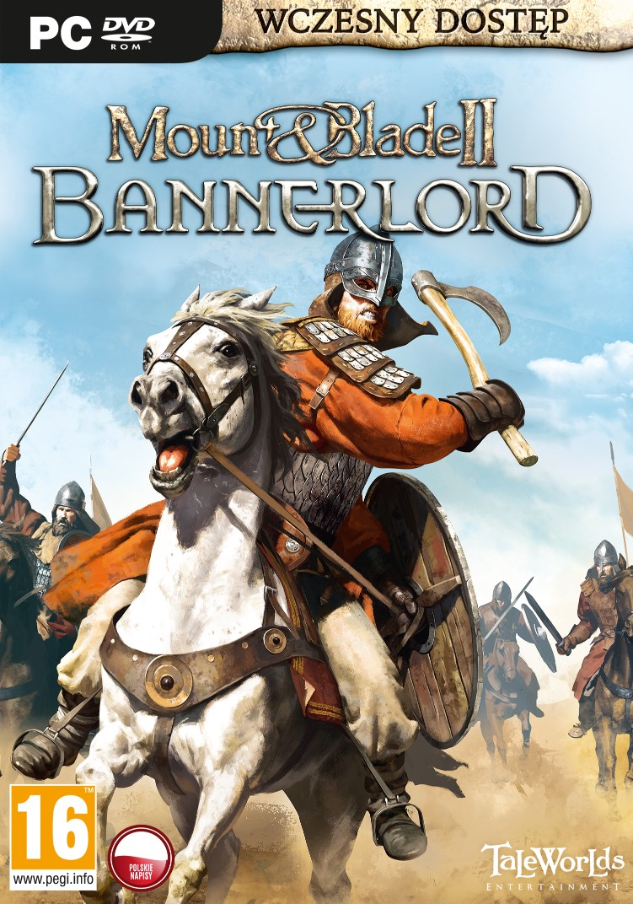

"Mount & Blade" - це серія відеоігор у жанрі action-RPG, розроблених і випущених студією TaleWorlds Entertainment. Головна особливість цієї серії - унікальна система геймплею, яка поєднує в собі елементи рольових ігор, стратегій та екшену, а також відкритий світ, де гравець може вільно подорожувати, брати участь у битвах та займатися політикою.
Основна ідея "Mount & Blade" полягає в тому, щоб стати впливовим воїном або правителем у середньовічному світі. Гравці можуть вибирати свою шляхетну мету - від звичайного наемного воїна, який служить у арміях різних фракцій, до правителя власної держави.
Основний геймплей складається з різноманітних аспектів, таких як:
Битви: Головний акцент у грі складається на масштабних битвах, де гравці можуть керувати великими арміями. Система бойових механік у "Mount & Blade" дозволяє гравцям відчути реалістичність битви, контролюючи рух свого персонажа, а також ведучи війська у бою.
Експедиції: Гравці можуть подорожувати по великому світу "Mount & Blade", відвідуючи різноманітні міста, села, замки та інші локації. У ході своїх подорожей вони можуть зустрічати різних персонажів, приєднуватися до фракцій або навіть створювати свої власні армії.
Політика та дипломатія: Гравці можуть займатися політикою, укладати союзи, відстоювати свої права та розбиратися в інтригах між різними фракціями. Успіх у цих аспектах може вплинути на долю гравця в світі гри.
Розвиток персонажа: Гравці можуть покращувати навички свого персонажа, збільшувати його рівень, вдосконалювати зброю та збільшувати військову майстерність.
Серія "Mount & Blade" має багато ігрових титулів, включаючи "Mount & Blade", "Mount & Blade: Warband", "Mount & Blade: With Fire & Sword", а також "Mount & Blade II: Bannerlord", який є останньою частиною серії на момент мого останнього оновлення. Кожна нова гра розширює та поліпшує геймплейні можливості, але зберігає основні принципи, які зробили серію такою популярною серед шанувальників середньовічного екшену та стратегії.

Створення серії ігор
"Mount & Blade" - це результат багаторічної праці і таланту команди розробників з TaleWorlds Entertainment. Основна ідея виникла в голові одного з розробників, Армана Євдеміра, ще у 2002 році, коли він студентом університету в Білкенті. Його бажання створити відкритий світ, де гравці можуть вільно рухатися та впливати на долю свого персонажа, вилилось у створення прототипу гри "Mount & Blade".
Перші роботи над грою почалися в 2004 році, коли Арман Євдемір збирав невелику команду програмістів та дизайнерів. Разом вони працювали над розробкою гри, вдосконалюючи ідеї та додавали нові механіки. Остаточна версія гри "Mount & Blade" була випущена в 2008 році.
Великий успіх першої гри підштовхнув команду TaleWorlds до подальших розробок. У 2010 році вийшла "Mount & Blade: Warband", яка додала багато нових функцій, включаючи багатокористувацький режим і покращену систему управління.
Згодом, у 2012 році була представлена "Mount & Blade: With Fire & Sword", яка відбулася в епоху ранньої стрільби з вогнепальної зброї. Ця гра, на відміну від попередніх, базувалася на романі Генріка Сенкевича "Огнем і мечем".
Найновіша частина серії, "Mount & Blade II: Bannerlord", була анонсована у 2012 році, але вийшла в ранньому доступі лише у 2020 році, після багатьох років розробки. Ця гра зберегла основні принципи попередніх частин, але має вдосконалену графіку, нові механіки та більшу свободу дій для гравців.
У всій історії створення серії "Mount & Blade" можна побачити великий наполегливий труд команди розробників, яка працювала над кожною частиною гри, розширюючи її можливості та забезпечуючи її успіх серед гравців у всьому світі.
TaleWorlds Entertainment
Студія TaleWorlds Entertainment, розробник серії ігор "Mount & Blade", була заснована в 2005 році в Туреччині. Компанія базується у місті Анкара і займається розробкою відеоігор.
Засновником та головою студії є Арман Євдемір, який також є ключовим розробником серії "Mount & Blade". Перша гра була створена Євдеміром у співпраці зі своєю командою, і вона вийшла на ринок під назвою "Mount & Blade" в 2008 році.
Що стосується видавців, серія "Mount & Blade" мала різних партнерів на різних етапах свого розвитку. Наприклад, перша гра була випущена під видавництвом Paradox Interactive, шведської компанії, спеціалізованої на виданні стратегічних ігор.
Пізніше TaleWorlds Entertainment вирішила випускати свої ігри самостійно. Зокрема, "Mount & Blade: Warband" і "Mount & Blade: With Fire & Sword" були випущені компанією TaleWorlds Entertainment без участі зовнішніх видавців.
Однак для "Mount & Blade II: Bannerlord" TaleWorlds Entertainment знову уклала угоду з Paradox Interactive для видавництва гри. Ця співпраця дозволила прискорити процес випуску гри та забезпечити її доступність на різних платформах.
Загалом, TaleWorlds Entertainment відома своєю ефективною роботою над серією "Mount & Blade" та визнана багатьма гравцями як талановита розробницька студія. Їх партнерство з різними видавцями допомагає їм розширювати аудиторію та забезпечувати успіх своїх проектів на світовому ринку відеоігор.ець - творець своєї долі, і вся країна – ваші підданий і ворог, ваші союзники і супротивники.
Релізи в серії"
Mount & Blade:
Реліз: 2008 рік
Перша гра в серії, що встановила основні принципи геймплею.
Гравці беруть на себе роль стрілка-наемника в середньовічному світі.
Основні елементи гри: відкритий світ, бойові битви, політика та дипломатія, розвиток персонажа.
Гра отримала позитивні відгуки за свою відкритість та свободу вибору, але критикувалася за графічний рівень та деякі технічні проблеми.
Ви можете дізнатись більше, перейшовши по лінку : Mount & Blade
Mount & Blade: Warband:
Реліз: 2010 рік
Покращена та розширена версія оригінальної гри.
Додано багатокористувацький режим, що дозволяє гравцям відтворювати стратегічні битви в онлайні.
Введено нові фракції, оновлену графіку та покращену систему управління.
Отримала загалом високі оцінки від гравців і критиків, стала дуже популярною серед любителів середньовічних стратегій та бойовиків.
Довгоочікувана сиквел, яка запропонувала сучасні графічні та геймплейні покращення.
Події гри відбуваються за 200 років до подій оригінального "Mount & Blade", дозволяючи гравцям досліджувати світ на підйомі його потужності.
Додано нові функції, такі як розробка та управління феодальними державами, покращена система битви, вдосконалений штучний інтелект та інше.
Гра відзначена за свою глибину і відкритий світ, але все ще знаходиться в процесі розвитку, з невеликою кількістю критиків відносно до несправностей та нестійкості.